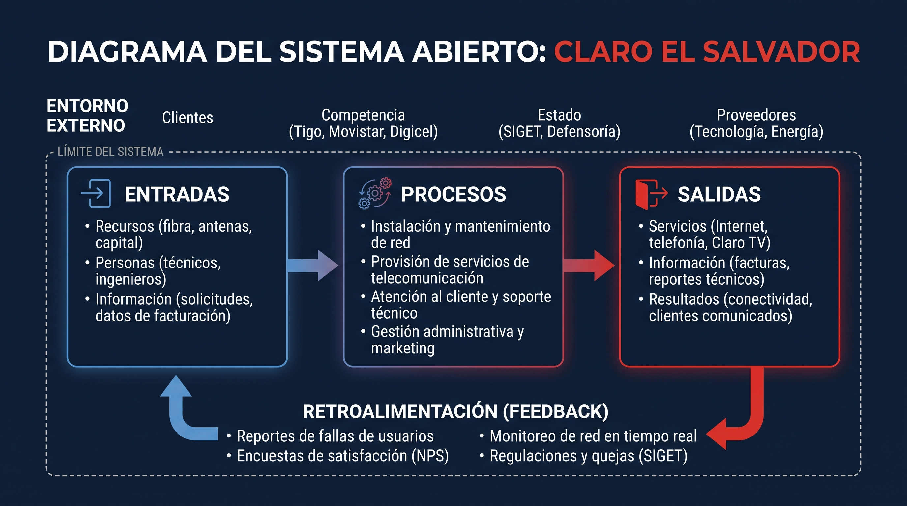

Claro El Salvador como Sistema Abierto
Facultad de Ingeniería y Arquitectura • Escuela de Ingeniería en Sistemas
Actividad de Discusión 2: La Organización como Sistema Abierto (Caso Claro El Salvador)
- Billy Samuel Martinez Cesper (MC19049)
- Angelo Jeremias Barrientos Serrano (BS26003)
Grupo de Trabajo: 01
Fecha de entrega: 11/10/2026
🏢 1. Claro El Salvador y el Sistema Abierto
Claro El Salvador es una subsidiaria de América Móvil que brinda servicios de telecomunicaciones a nivel nacional. En la Teoría de Sistemas, se clasifica como un sistema abierto porque necesita interactuar de forma continua con su entorno para mantenerse con vida y no caer en la entropía (quiebra o desactualización).
Servicios Principales
- Telefonía fija y móvil (prepago y postpago).
- Internet de banda ancha y fibra óptica.
- Claro TV (cable digital y satelital).
- Servicios en la nube y soluciones para empresas.
¿Por qué es un Sistema Abierto?
- Importa recursos: cables, antenas, electricidad, dinero y empleados.
- Transforma: convierte la tecnología y datos en conectividad.
- Exporta salidas: servicios de llamadas, datos y facturas.
- Se autorregula: mediante reportes de fallas y quejas ante SIGET.
📊 2. Diagrama del Sistema Abierto
Este diagrama muestra los límites de Claro El Salvador, su intercambio con el entorno externo y el ciclo continuo de retroalimentación.

⚙️ 3. Componentes del Sistema de Claro
Selecciona cada botón para ver el detalle de cada parte del sistema:
🌍 Factores del Entorno Externo
- Clientes: Familias salvadoreñas, pequeñas empresas y gobierno que necesitan comunicación diaria.
- Competencia: Operadores rivales como Tigo, Movistar y Digicel que presionan con ofertas y planes.
- Estado y Reguladores: La SIGET (normas técnicas y calidad) y la Defensoría del Consumidor (derechos del usuario).
- Proveedores: Empresas globales como Huawei, Cisco y Nokia para equipos, y distribuidoras de energía eléctrica.
📥 Entradas (Inputs)
- Recursos Físicos: Cables de fibra óptica, antenas repetidoras, routers, energía eléctrica y capital de inversión.
- Personas: Ingenieros en sistemas y telecomunicaciones, técnicos de instalación, ejecutivos de agencias y administradores.
- Información: Solicitudes de nuevos contratos, datos de facturación de clientes, peticiones de portabilidad y quejas.
⚙️ Procesos de Transformación
- Infraestructura: Mantenimiento e instalación de cableado, fibra óptica y torres en los 14 departamentos.
- Servicios de Red: Enrutamiento de datos de internet y conmutación de llamadas en tiempo real.
- Soporte al Cliente: Call center de ayuda técnica y atención presencial en agencias.
- Gestión y Cobro: Facturación electrónica, cobros, mercadeo y planificación de cobertura.
📤 Salidas (Outputs)
- Servicios: Internet residencial y móvil funcional, telefonía fija y móvil, televisión Claro TV.
- Información: Facturas mensuales enviadas a usuarios, estados de cuenta y reportes de calidad para la SIGET.
- Resultados: Millones de personas comunicadas, comercios operando en línea e innovación tecnológica en el país.
🔄 Retroalimentación (Feedback)
- Monitoreo en tiempo real: Sensores del centro de operaciones (NOC) que detectan caídas de enlace antes que el cliente.
- Reportes de usuarios: Llamadas de clientes cuando se corta el servicio para enviar cuadrillas técnicas.
- Encuestas de satisfacción: Encuestas NPS enviadas por SMS tras una visita de soporte.
- Ajustes por la SIGET y competencia: Adaptar precios y mejorar cobertura cuando hay reclamos o promociones de Tigo.
💡 4. Ejemplo Interactivo: ¿Cómo funciona el ciclo del sistema?
Haz clic en el botón para simular cómo viaja un reporte de falla por todo el sistema abierto de Claro:
📝 5. Conclusiones del Trabajo
Claro depende de la importación continua de energía, repuestos y clientes del entorno; si se aislara, desaparecería.
Sin las llamadas de soporte y el monitoreo de red, la empresa no sabría dónde reparar fallas ni cómo mejorar sus servicios.
Factores externos como la competencia (Tigo, Movistar) y las normas de la SIGET obligan a Claro a evolucionar sus precios y tecnología.